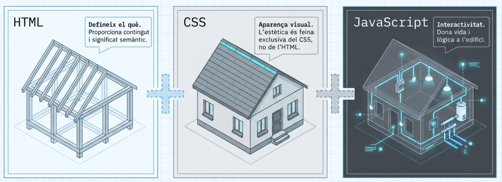
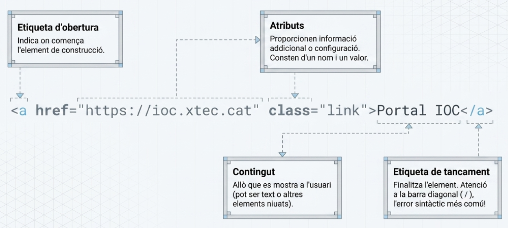
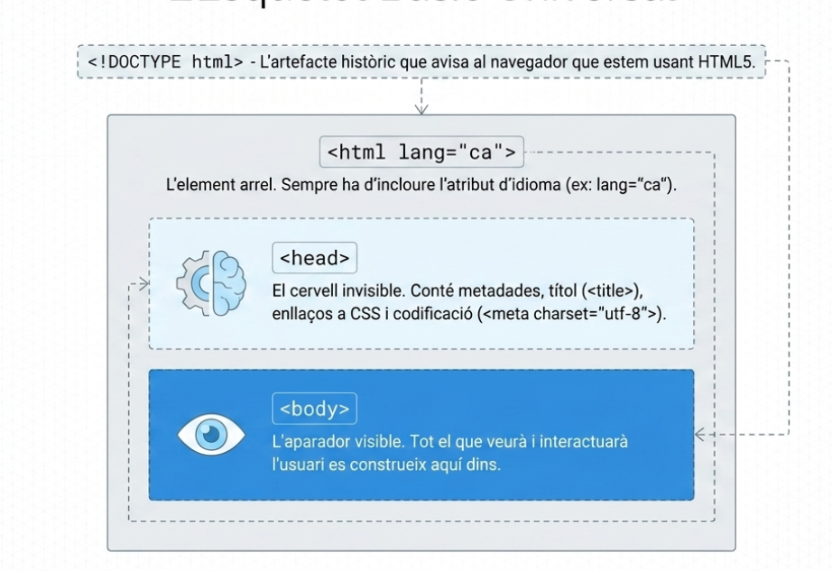
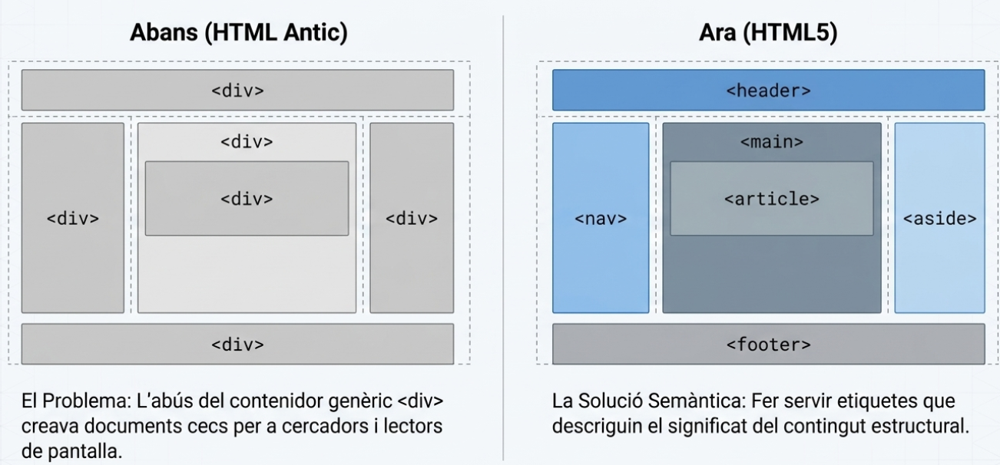

Bloc 1: Fonaments de l'HTML5
1. Què és l'HTML5?
L'HTML (HyperText Markup Language) és la tecnologia que defineix el contingut i l'estructura de qualsevol lloc web.
- Semàntica: L'HTML5 introdueix etiquetes que descriuen el significat del contingut de manera que les màquines el puguin entendre, cosa vital per a l'accessibilitat i el SEO.
- Objectiu: Millorar la interoperabilitat i oferir funcionalitats estàndard per a multimèdia i aplicacions web.

2. Anatomia d'un Element HTML
La sintaxi es basa en elements que inclouen [6, 7]:
- Etiqueta d'obertura:
<nom_etiqueta>. - Atributs: Proporcionen propietats extra (ex:
class,id,lang,href) . - Contingut: El text o elements niats.
- Etiqueta de tancament:
</nom_etiqueta>. - Elements buits (void): No tenen contingut ni tancament (ex:
<img>,<br>)

3. Estructura Bàsica del Document
Tot document ha de seguir aquesta jerarquia essencial :
<!DOCTYPE html>: Obligatori per indicar que s'usa l'estàndard HTML5 .<html lang="ca">: L'element arrel on cal especificar l'idioma per als lectors de pantalla .<head>: Contenidor de metadades (títol, codificaciócharset, enllaços a CSS) no visibles.<body>: Conté tot el contingut que l'usuari veurà.

4. Jerarquia de Continguts
Una pàgina web no és només una suma d'etiquetes: és una estructura d'informació. L'usuari i el navegador han de poder entendre què és principal, què és secundari i quines parts estan relacionades.
Idees clau
- Cada pàgina ha de tenir un tema principal clar.
- Els títols (
<h1>a<h6>) han de crear una jerarquia lògica, sense salts de nivell. - Els continguts relacionats s'han d'agrupar dins de seccions o articles.
- L'ordre del codi també comunica estructura i significat.
Exemple de jerarquia correcta
Veure demo: Jerarquia de continguts
Error habitual
Fer servir títols només perquè es veuen grans, sense respectar la jerarquia del contingut.
5. Elements de Bloc i Elements Inline
En HTML, els elements es comporten principalment de dues maneres: com a bloc o com a inline.
Elements de bloc
Un element de bloc ocupa, per defecte, tota l'amplada disponible i comença en una línia nova.
- Exemples habituals:
<div>,<p>,<h1>...<h6>,<section>,<article>,<ul>,<li>. - S'utilitzen per estructurar grans parts del contingut.
Elements inline
Un element inline només ocupa l'espai del seu contingut i no força un salt de línia.
- Exemples habituals:
<span>,<a>,<strong>,<em>,<img>,<code>. - S'utilitzen per donar significat o estil a parts concretes dins d'un text.
Exemple ràpid
Veure demo: Elements de bloc i inline
6. Estructura Semàntica Principal
L'HTML5 defineix elements per descriure les zones de la pàgina [14-16]:
<header>: Capçalera amb logos o títols de la secció [16, 17].<nav>: Bloc de navegació principal [5, 16, 17].<main>: Contingut principal i únic de la pàgina [16, 18].<section>: Agrupa contingut relacionat temàticament [16, 19].<article>: Contingut autònom i independent (notícies, posts) [16, 18, 20].<aside>: Contingut relacionat de manera indirecta (barres laterals) [16, 18].<footer>: Peu de pàgina amb info legal o xarxes socials [5, 16, 18].

Adeu divitis
L'ús excessiu de <div> sense semàntica és desaconsellat. Els nous elements semàntics milloren l'accessibilitat, el SEO i la comprensió del contingut.
7. Checklist ràpid d'encapçalaments
Per revisar la jerarquia abans de publicar:
- Un sol
h1: Resumeix el tema principal de la pàgina. - Ordre seqüencial:
h2per seccions principals,h3per subseccions, etc. - Sense ús visual: No triïs un nivell de títol per mida o estil, sinó per estructura.
- Títols descriptius: Cada encapçalament ha d'explicar què vindrà a continuació.
8. Accessibilitat web (Principis WCAG)
L'accessibilitat garanteix que tothom pugui percebre, operar i entendre el web, independentment de les seves capacitats :
- Perceptible: Info presentada de manera que es pugui detectar pels sentits.
- Operable: La interfície ha de ser navegable, especialment amb teclat.
- Comprensible: El funcionament i la info han de ser clars.
- Robust: Compatible amb diferents navegadors i ajudes tècniques.
9. Bones pràctiques i validació
- Text alternatiu (
alt): Totes les imatges l'han de tenir per descriure el contingut. - Etiquetes de formulari (
<label>): Associa sempre el text amb el seu<input>mitjançant els atributsforiid. - Validació W3C: Utilitza el validador oficial per corregir errors de sintaxi o anidament.
10. Resum del Bloc 1
Aquest bloc cobreix els quatre fonaments bàsics de l'HTML5:
- Estructura HTML correcta: esquelet bàsic del document i anatomia dels elements.
- Semàntica i jerarquia de continguts: ús correcte de títols, seccions i ordre lògic.
- Etiquetes estructurals principals:
header,nav,main,section,article,asideifooter. - Accessibilitat bàsica des del codi: idioma del document, textos alternatius, labels i validació.
11. Referències i recursos de consulta
- Semantic HTML - MDN Web Docs
- HTML: HyperText Markup Language - Curriculum
-
Descripció: Defineix la tecnologia HTML i la importància de la semàntica per a l'accessibilitat i el SEO.
-
Estructura - Accesible.es
- Guía rápida de accesibilidad web: Estructura
-
Descripció: Marcado semàntic de seccions (header, nav, main, article) per a l'accessibilitat .
-
Etiquetes i atributs - XTEC (Aplicacions Web)
- Materials IOC: Fonaments d'HTML
-
Descripció: Sintaxi d'etiquetes, atributs globals i classificació d'elements de bloc i de línia.
-
HTML 5 - Viquipèdia
- HTML 5 - L'enciclopèdia lliure
- Descripció: Història, nous elements semàntics (nav, footer, audio, video) i novetats de l'estàndard
-
Patrons de disseny web adaptatiu - IOC
- Materials IOC: Patrons i Frameworks web (PDF)
- Descripció: Estratègies de disseny (Mobile First) i implementació de graelles flexibles
-
Principis d'accessibilitat web (WCAG) - IOC
- Materials IOC: Les WCAG 2.1
- Descripció: Els quatre principis (Perceptible, Operable, Entenedor, Robust) i tècniques d'accessibilitat
-
Flexbox Froggy - Joc educatiu
- Aprendre Flexbox jugant
- Descripció: Eina interactiva per practicar les propietats d'alineació de Flexbox
-
Validator W3C: Guía de validación - Leandro Fuentes
- Cómo validar tu HTML como un pro
- Descripció: Ús del validador oficial del W3C i del Nu HTML Checker per assegurar codi sense errors .